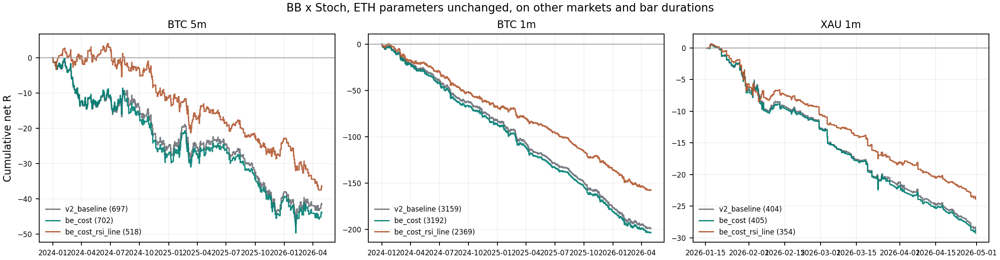

规则一个字没改，直接搬到 BTC 5m、BTC 1m、XAU 1m——没有任何一组做到费用后为正。 参照组（保本含 0.2% 成本）每笔净 R：BTC 5m -0.0625R（702 笔）；BTC 1m -0.0638R（3192 笔）；XAU 1m -0.0722R（405 笔）。 最差的是 XAU 1m。
但毛收益的符号在不同市场并不一样，这点不能糊过去：BTC 5m 毛收益为正（最好一组 +4.98R，f* 最高 +0.51 bp/边）；BTC 1m 毛收益为正（最好一组 +11.74R，f* 最高 +0.46 bp/边）；XAU 1m 毛收益为负或约零（最好一组 -0.25R，f* 最高 -0.31 bp/边）。 ETH 5m 28 个月毛收益是明确为负的（−21.37R/652 笔），BTC 不是——BTC 的毛收益微正， 是被手续费吃光的。两者的病因不同：ETH 是规则本身没有优势，BTC 是优势太小扛不住成本。
微正也不等于能做。 f* 是使总净额归零所需的每边费率；BTC 最好的一组 f* 只有 +0.51 bp/边，而 OKX 最低 maker 是 2 bp、taker 5 bp—— 需要的费率比市面最便宜的还低 4 倍以上，现实中拿不到。所以净额仍然是表里那些负数。
| 市场/周期 | K 线根数 | 覆盖区间 | 缺口根 | 组合信号 | 其中多/空 | RSI 门放行 |
|---|---|---|---|---|---|---|
| BTC 5m | 245,088 | 2023-12-31 16:00 → 2026-04-30 16:00 | 0 | 1494 | 692/802 | 850 |
| BTC 1m | 1,225,440 | 2023-12-31 16:00 → 2026-04-30 16:00 | 0 | 9028 | 4391/4637 | 4792 |
| XAU 1m | 151,674 | 2026-01-15 08:06 → 2026-04-30 16:00 | 0 | 1548 | 734/814 | 1082 |
全部经冻结读取器读到 2026-04-30T16:00:00Z 之前，holdout 消耗 0；档案下载时另加 --archive-max-exclusive 2026-05-04T00:00:00Z 硬边界。 XAU-USDT-SWAP 在 OKX 上市较晚，可用历史只有 3 个多月，笔数少，只作描述不宣称稳健。 缺口根数按各自周期判定（1m 序列若按 5m 默认判缺口会把每根都当缺口，本轮显式声明周期）。
| 市场/周期 | 组 | 完整交易 | 净 R | 每笔净 R | 净胜率 | PF | 回撤 R | 最大连亏 | 0 费率净 R | f* (bp/边) | 配对超额 R/笔 | 月块 p |
|---|---|---|---|---|---|---|---|---|---|---|---|---|
| BTC 5m | 原版（保本价=入场价） | 697 | -41.50 | -0.0595 | 54.81% | 0.82 | 48.00 | 8 | +4.98 | +0.51 | +0.0384 | 0.042 |
| BTC 5m | 参照：保本含 0.2% 成本 | 702 | -43.91 | -0.0625 | 58.26% | 0.81 | 49.65 | 8 | +2.91 | +0.24 | +0.0356 | 0.060 |
| BTC 5m | ＋RSI 线区域门 | 518 | -36.30 | -0.0701 | 55.98% | 0.79 | 41.48 | 6 | -1.76 | -1.81 | +0.0392 | 0.059 |
| BTC 1m | 原版（保本价=入场价） | 3159 | -198.88 | -0.0630 | 50.52% | 0.60 | 199.63 | 12 | +11.74 | +0.46 | +0.0034 | 0.204 |
| BTC 1m | 参照：保本含 0.2% 成本 | 3192 | -203.62 | -0.0638 | 54.23% | 0.59 | 204.29 | 11 | +9.20 | +0.38 | +0.0031 | 0.223 |
| BTC 1m | ＋RSI 线区域门 | 2369 | -157.38 | -0.0664 | 53.65% | 0.60 | 158.64 | 10 | +0.55 | +0.07 | +0.0037 | 0.272 |
| XAU 1m | 原版（保本价=入场价） | 404 | -28.63 | -0.0709 | 38.86% | 0.44 | 29.16 | 13 | -1.69 | -0.84 | +0.0031 | 0.375 |
| XAU 1m | 参照：保本含 0.2% 成本 | 405 | -29.23 | -0.0722 | 41.23% | 0.43 | 29.80 | 13 | -2.22 | -1.04 | +0.0030 | 0.375 |
| XAU 1m | ＋RSI 线区域门 | 354 | -23.86 | -0.0674 | 40.40% | 0.43 | 24.55 | 13 | -0.25 | -0.31 | +0.0107 | 0.188 |
跨市场跨周期不能比总净 R（笔数和单位风险口径不同），只看每笔净 R、 0 费率那一列和 f\*。0 费率仍为负 = 毛收益为负 = 规则本身负期望。

| 市场/周期 | 最终退出原因 | 笔数 | 净 R 合计 |
|---|---|---|---|
| BTC 5m | 完整反向信号退出 | 217 | +152.07 |
| BTC 5m | 初始止损 | 195 | -207.99 |
| BTC 5m | 平半后保本 | 192 | +32.19 |
| BTC 5m | 平半时新保护价已被越过 | 98 | -20.18 |
| BTC 1m | 平半时新保护价已被越过 | 1201 | -224.35 |
| BTC 1m | 完整反向信号退出 | 952 | +246.12 |
| BTC 1m | 平半后保本 | 779 | +46.24 |
| BTC 1m | 初始止损 | 254 | -270.92 |
| BTC 1m | 跳空/同开盘保本退出 | 6 | -0.71 |
| XAU 1m | 平半时新保护价已被越过 | 215 | -29.74 |
| XAU 1m | 完整反向信号退出 | 99 | +18.69 |
| XAU 1m | 平半后保本 | 68 | +3.33 |
| XAU 1m | 初始止损 | 20 | -21.33 |
| XAU 1m | 跳空/同开盘保本退出 | 3 | -0.17 |
验证记录：{"focused_tests": {"command": ".venv/bin/python -m pytest tests/evaluation/test_btc_xau_bb_stoch_study.py tests/evaluation/test_bb_stoch_longrun_study.py tests/evaluation/test_bb_stoch_parameter_replay.py tests/evaluation/test_eth_bb_stoch_study.py tests/evaluation/test_bb_stoch_rsi_study.py -q", "passed": 37, "failed": 0}, "broad_gates": {"command": ".venv/bin/python -m pytest tests/boundaries tests/causality tests/parity -q", "passed": 468, "failed": 7, "causes": {"existing_artifact_missing_source_commit": 5, "existing_migration_hash_mismatches": 2}, "scope": "unchanged pre-existing failures already disclosed in HANDOFF; unrelated and not bypassed"}, "bar_duration_handling": "each dataset declares its own _data_gap; the engine's five-minute default is never used for the 1m series", "economic_ledger_checks": 70842, "retuned_for_new_market": false, "parameter_search": false, "native_tradingview_parity": false, "holdout_consumed": false}。
cd /Users/zhangzc/fable-trading
.venv/bin/python -m pytest tests/evaluation/test_btc_xau_bb_stoch_study.py \
tests/evaluation/test_bb_stoch_longrun_study.py tests/evaluation/test_bb_stoch_parameter_replay.py -q
for s in BTC_USDT_SWAP XAU_USDT_SWAP; do
.venv/bin/python -m src.data.fetch_okx --symbols $s --bar 1m --archive-monthly-start 2024-01 \
--archive-monthly-end 2026-04 --archive-max-exclusive 2026-05-04T00:00:00Z --out-dir data/kline_deep_1m
done
.venv/bin/python -m src.data.fetch_okx --symbols BTC_USDT_SWAP --bar 5m --archive-monthly-start 2024-01 \
--archive-monthly-end 2026-04 --archive-max-exclusive 2026-05-04T00:00:00Z --out-dir data/kline_deep_5m
for d in btc_5m btc_1m xau_1m; do .venv/bin/python -m yoyo.evaluation.btc_xau_bb_stoch_study --dataset $d & done; wait
.venv/bin/python -m yoyo.evaluation.btc_xau_bb_stoch_report